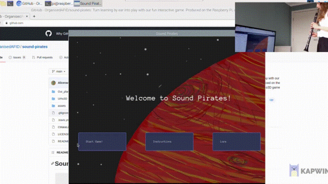

SpacePirates
We’re a group of students developing a game that is controlled by audio to teach you to play by ear. The game will play a tone in the C major scale and it is your job to replicate the correct note. The objective of the game is to catch the spaceship that is flying in front of you, but it will fly further away if you play the incorrect note. If you play the correct note you get closer to the spaceship.
The game ends when either the spaceship has flown too far away (you loose) or you manage to catch up to the spaceship (win).
Check out our github: https://github.com/OrganisedAFID/sound-pirates.git for more info and a full video on youtube: https://youtu.be/fhjWzMPJlKY
